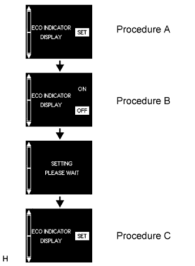

METER / GAUGE SYSTEM > INITIALIZATION |
| METHOD TO DISABLE ECO DRIVING INDICATOR LIGHT |
|  |
With the vehicle stationary or at a vehicle speed of less than 8 km/h (4.9 mph), press and hold the menu switch on the steering pad switch to display the meter customize mode screen.
Press the ENTER switch on the steering pad switch up or down to display the "ECO INDICATOR SET" screen, and then press the ENTER switch (procedure A).
Press the ENTER switch on the steering pad switch up or down to select "OFF", and then press the ENTER switch (procedure B).
Press the menu switch on the steering pad switch to end meter customize mode (procedure C).